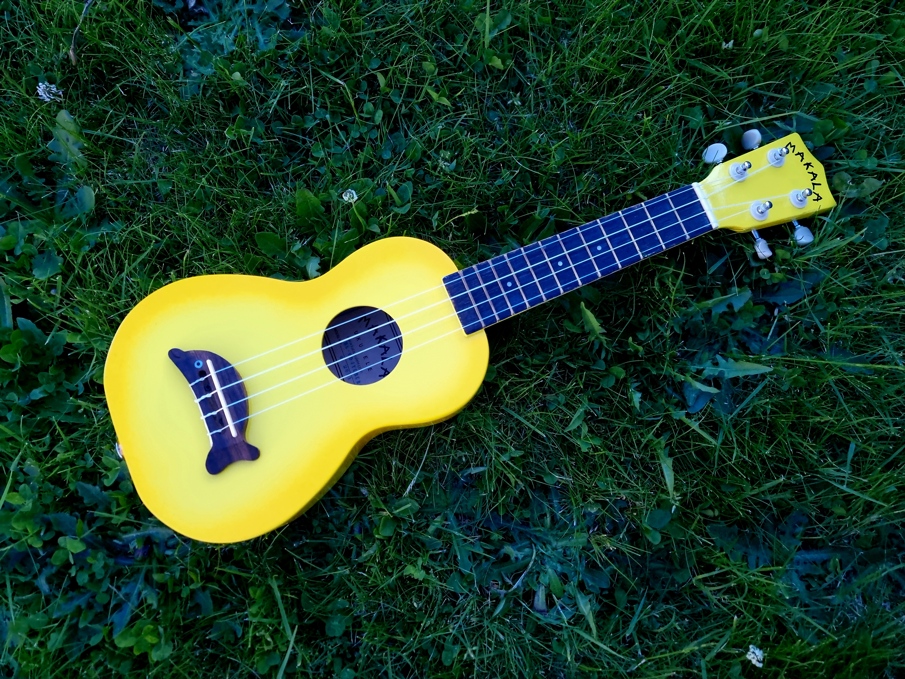
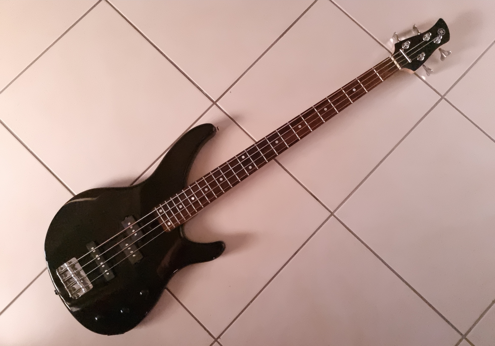
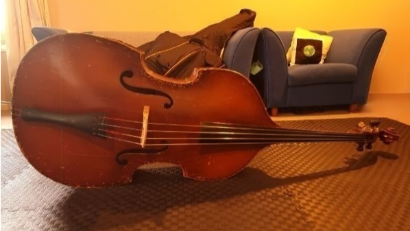

- Home
[ Music ]
- Crafts
- Electronics
- Blank
[ Music ]
I probably play too many instruments, so if I list them all that should fill some space.
So, here they are, in order of weight, as well as some picks I made from credit cards.
Very professional picks


What's wrong with this??
A great instrument. Easy to play, easy to get good at, small and portable. Except no one wants a ukulele in a band for some reason...
I'm apparently the best ukulele player in the school, or at least according to Mr Horner. Probably not that big an acheivement, but hey, have to start somewhere.
Definitely a more respectable instrument. It's also my main now, due to people actually wanting a bassist. The strings actually make sense, instead of being random notes like a ukulele, so that's nice.

Yay, a respectable instrument

Try carrying this across the school
Would be a very respectable instrument if it wasn't in this bad of a condition...
People always ask if this is heavy. Yes, it is. Not as heavy as it looks, but still heavier than I'd like to carry across school.
It's also too big to fit in our usual car, and was very much a pain to bus with.